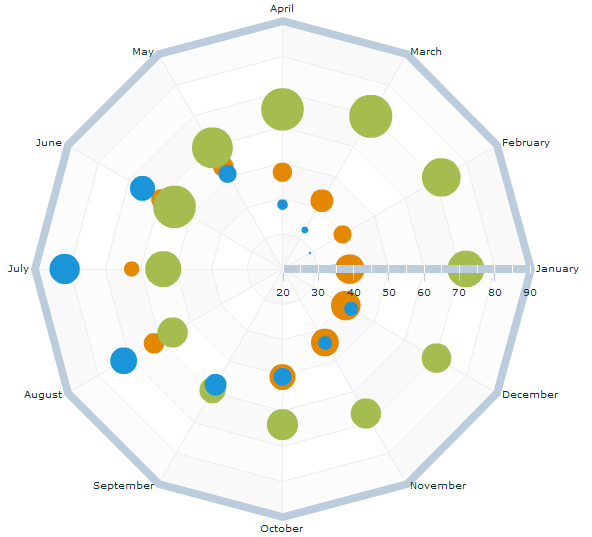

You can use the
RadarBubbleSeries class to represent data with three values for each data point:
A category that determines its position
along the angular axis.
A value that determines its position
along the radial axis.
A value that determines the size of
the chart symbol relative to the other data points on the chart.
The
radiusField specifies the field of the data provider that determines
the radius of each symbol relative to the other data points in the
chart. This property is
mandatory.
The
<ilog:RadarBubbleSeries> tag takes an additional attribute,
maxRadius. This property specifies the maximum radius of the
largest chart item, in pixels, as for Cartesian bubble charts. The
data point with the largest value is assigned this radius and all
other data points are assigned a smaller radius based on their value
relative to the largest value. The default value is 30 pixels.
The following figure shows an example of a radar chart
with a bubble series type. The chart shows the average temperatures
for London, Sydney, and Moscow on the radial axis, and the months
of the year on the angular axis. The corresponding rainfall is also
displayed on the radial axis and is determined by the size of the
bubble.

The following code displays the radar bubble series chart
shown in the figure.
<?xml version="1.0" ?>
<!-- Simple example to demonstrate the RadarChart control with
RadarBubbleSeries.
-->
<mx:Application xmlns:mx="http://www.adobe.com/2006/mxml"
xmlns:ilog="http://www.ilog.com/2007/ilog/flex">
<mx:Script>
<![CDATA[
import mx.collections.ArrayCollection;
[Bindable]
public var london:ArrayCollection = new ArrayCollection([
{Month:"January", Temperature:39, Rainfall:3.1},
{Month:"February", Temperature:39.6, Rainfall:2.0},
{Month:"March", Temperature:42.3, Rainfall:2.4},
{Month:"April", Temperature:47.3, Rainfall:2.1},
{Month:"May", Temperature:53.4, Rainfall:2.2},
{Month:"June", Temperature:59.4, Rainfall:2.2},
{Month:"July", Temperature:62.6, Rainfall:1.8},
{Month:"August", Temperature:61.9, Rainfall:2.2},
{Month:"September", Temperature:57.6, Rainfall:2.2},
{Month:"October", Temperature:50.5, Rainfall:2.7},
{Month:"November", Temperature:43.9, Rainfall:2.9},
{Month:"December", Temperature:40.6, Rainfall:3.1}
]);
[Bindable]
public var sydney:ArrayCollection = new ArrayCollection([
{Month:"January", Temperature:71.8, Rainfall:4.1},
{Month:"February", Temperature:71.8, Rainfall:4.4},
{Month:"March", Temperature:69.8, Rainfall:5.2},
{Month:"April", Temperature:65.1, Rainfall:5.1},
{Month:"May", Temperature:59.5, Rainfall:4.8},
{Month:"June", Temperature:55.2, Rainfall:5.1},
{Month:"July", Temperature:53.6, Rainfall:4.0},
{Month:"August", Temperature:55.8, Rainfall:3.2},
{Month:"September", Temperature:59.5, Rainfall:2.7},
{Month:"October", Temperature:63.9, Rainfall:3.3},
{Month:"November", Temperature:67.1, Rainfall:3.2},
{Month:"December", Temperature:70.2, Rainfall:3.1}
]);
[Bindable]
public var moscow:ArrayCollection = new ArrayCollection([
{Month:"January", Temperature:34.4, Rainfall:1.4},
{Month:"February", Temperature:29.0, Rainfall:1.1},
{Month:"March", Temperature:32.7, Rainfall:1.3},
{Month:"April", Temperature:38.2, Rainfall:1.5},
{Month:"May", Temperature:51, Rainfall:2.0},
{Month:"June", Temperature:65.6, Rainfall:2.6},
{Month:"July", Temperature:81.5, Rainfall:3.2},
{Month:"August", Temperature:71.8, Rainfall:2.8},
{Month:"September", Temperature:57.7, Rainfall:2.3},
{Month:"October", Temperature:50.4, Rainfall:2.0},
{Month:"November", Temperature:44.1, Rainfall:1.7},
{Month:"December", Temperature:42.4, Rainfall:1.7}
]);
]]>
</mx:Script>
<mx:Panel width="100%" height="100%" title="Radar Bubble Series Example"
layout="horizontal">
<ilog:RadarChart id="radar" width="100%" height="100%" showDataTips="true">
<ilog:angularAxis>
<ilog:AngularAxis dataProvider="{london}" categoryField="Month"
displayName="Month" />
</ilog:angularAxis>
<ilog:radialAxis>
<mx:LinearAxis minimum="20" maximum="90" displayName="Temperature (Â˚F)" />
</ilog:radialAxis>
<ilog:series>
<ilog:RadarBubbleSeries maxRadius="30" dataProvider="{london}"
dataField="Temperature" radiusField="Rainfall" displayName="London">
<ilog:radiusAxis>
<mx:LogAxis id="rainfallAxis" displayName="Rainfall (inches)" />
</ilog:radiusAxis>
</ilog:RadarBubbleSeries>
<ilog:RadarBubbleSeries maxRadius="30" dataProvider="{sydney}"
dataField="Temperature" radiusField="Rainfall" displayName="Sydney"
radiusAxis="{rainfallAxis}" />
<ilog:RadarBubbleSeries maxRadius="30" dataProvider="{moscow}"
dataField="Temperature" radiusField="Rainfall" displayName="Moscow"
radiusAxis="{rainfallAxis}" />
</ilog:series>
</ilog:RadarChart>
<mx:Legend dataProvider="{radar}" />
</mx:Panel>
</mx:Application>